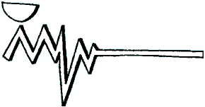
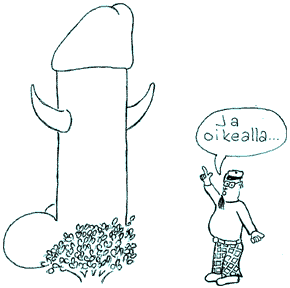
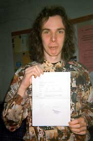

|
 |
|
Alkorytmi"Minulta kysyttiin, mikä oli Alkorytmi. Kysymys on hyvä ja ymmärrettävä, sillä näinä päivinä moni nuori tieteen toivo yhdistää Alkorytmin liian usein pörröiseen jyrsijään, peltimukiin tai punaiseen spriitussiin. Mielikuvat ovat aivan vääriä."[Alkorytmin päätoimittajat kautta aikojen] Teksti: Jukka "Parvi" Parviainen Tietokillan kiltalehteä, Alkorytmiä, on kuluneen kymmenen vuoden aikana julkaistu vaihtelevalla menestyksellä yli 50 numeroa. Alkorytmi on niin tiedottanut kuin hauskuttanutkin - se on ollut tikkiläisten lehti. Alkorytmi osallistuu killan 10-vuotisjuhliin julkaisemalla erikoisnumeron, jossa on koottuna parhaat palat vuosien varrelta. Silloin kun isä tietokoneen osti
Killan perustamisen jälkeen alkuvuodesta 1986
kiltalaisille jaettiin ns. Alkorytmi-junioria
tiedotustarkoituksessa. Toukokuussa 1986 ensimmäinen
Alkorytmi näki päivänvalonsa Mikko Laineen
kirjoittaessa ensimmäisen pääkirjoituksen.
Lehti syntyi alkuaikoina parissa päivässä
kokoamalla eri kirjoittajien tuotokset yhteen
leikkaa-liimaa-kopioi -menetelmällä. 1980-luvun
puoliväli oli vielä sitä aikaa, jolloin
mikrotietokoneet vasta tulivat työpaikoille ja
koteihin. Uudet koneet koettiin väliin pelottavina:
"Näyttöpäätteen
epäillään hävittäneen
väitöskirjan Kuopiossa", HS 7.1.1988
(Alkorytmi 1/88) tai "Tietokone vie sielun", HS
13.9.1987 (3/87). Ensimmäisessä
Alkorytmissä pohdittiin unelmien tietokonetta, jossa
BASICin Lämmintä viskiäPikkuhiljaa lehteä alettiin taittaa kaiken taiteen ja "helinismin" sääntöjen mukaan Macin julkaisuohjelmilla. Toimitusaika piteni päivistä viikkoihin ja ulkoasu siistiytyi. Alkorytmin kasaamisen ympärille kehittyikin joukko ihmisiä, Rytmiryhmä, jotka kirjoittivat käytännössä kaikki jutut lehteen. Rytmiryhmä sivisti kiltaa usein Dipolin legendaaristen Rytmikabinetin holvikaarten alta lämpimän viskin voimin. "Eikä millä tahansa viskillä, vaan kasikasilla. Ei seitsemän ole mikään hyvä luku. 88 on." (J.T. / 4/90). Mukana fyysisten henkilöiden lisäksi olivat virtuaalisesti lukuisat Alkorytmin hahmot kuten Lahna, Jurpo, Erkki, Pikkumyy, professori Veijo Penis tai Perttu-setä. Tekijäkaartin kautta, jota vieläkin saattaa nähdä killan tapahtumissa, monet vitsit säilyivät ja säilyvät. Perttu-setä vastaa kysymykseen klunssin syömisestä (1/88), Pikkumyy antaa aihetta itsetutkiskeluun "Kuinka paljon on paljon eli oletko pääteholisti?" (3/88) ja Pertti Kasasta äänestetään killan puheenjohtajaksi vielä syksyn 1995 vaalikokouksessa: "Ja lopuksi sitten tämä Pertti Kasanen. Miks me kiusataan sitä? Sehän on kivaa! Kaikki kiusaa Perttiä. Tulet rakastamaan sitä. Se on elämäntapa. Ilman Perttiä olis tää Rytmikin paljon köyhempi, siis noin juttumielessä, kuten äsken sanoin, tää on budjetissa aikamoinen keskonen." (3/88) Killan perustamisesta lähtien mukana olleet rytmiryhmäläiset päättivät kautensa ja kuoppasivat Alkorytmin 3.12.1991 ravintola Kosmoksessa (7/91) - juuri samaan aikaan kun kommunismi kaatui, Neuvostoliitto katosi kartalta ja Leningradin kopeekkaleipien tilalle tulivat Pietarin Bic Macit. Alkorytmin toiset tulemisetHautajaisia ei pitkään vietetty vaan uusi päätoimittaja Janne "Kaneli" Saarela otti heti kevään 1992 aluksi opintorytmissä kantaa vanhojen partojen opiskelumotivaatioon: "Toimituksella on vielä paineita kirjoittaa uudenuutukaista materiaalia tuleviin rytmeihin, jotteivät vanhemmat tieteenharjoittajat kyllästyisi 5 vuoden kiertoon jutuissa. Valmistukaa hyvät ihmiset, niin voimme painattaa vanhat rytmit uudestaan." (1/92) Nii-in, mitäpä sitä nyt voisi muutakaan toivoa? Alkorytmi on ollut tekijöidensä näköinen lehti. Tietokillassa on aina osattu harrastaa itseironiaa, niin bittinörtteilystä kuin sukupuolijakaumastakin. Kukapa ei voisi väittää, ettei kilta olisi Homojen Paratiisi (6/92)? Joskus kolmossivun tyttökuvien sijasta kirjoiteltiin Tommy Tabermanin runoja A4-kyrvän kera (3/93). Zorro on pohdiskellut tietoteekkarin henkistä tilaa (3/94) ja vaatinut Niksulaan parempaa tuuletusta (4/95): "Sitäpaitsi ei ole mukavaa, jos firman on piilotettava koodaajansa avoimien ovien päivänä, koska kyseinen DI on kuin örkki. Siispä pesulle ja suihketta kainaloon! Kun vielä saadaan Niksulan ilmastointi toimimaan, ei ole enää mitään syytä haista hielle."

Muutamana viimeisenä vuotena on ollut aistittavissa selvä henkinen lama. Varsinaista ideakaartia ei ole nyt löytynyt toteuttamaan omaperäistä lehteä. Onko kyseessä opintotuen leikkausten aiheuttama peikko vai muiden harrastusten kasvu? Eikö konventionaalinen lehti enää kiinnosta? Päätoimittajat ovat vähän väliä joutuneet kysymään Alkorytmin (elämän) tarkoitusta: "Lehdellä on oltava tarkoitus. On tiedettävä, miksi lehteä tehdään ja kenelle sitä tehdään. Tällä lehdellä ei ole tarkoitusta. Alkorytmi on kiltalehti, ja sen tarkoitus on vain olla kiltalehti. Riittääkö se? Mitä Tietokillan lehden tulee sitten olla? Kenelle me tätä teemme, ellemme Teille? - Aivan oikein. Meille. Mutta tätähän tämä on." (pääkirjoitus 2/90) Vaalikokous syksyllä 1993 ei valinnut lainkaan Alkorytmin päätoimittajaa halukkaiden loistaessa poissaolollaan. Lehti ei kuitenkaan kuollut vaan eli pitkälti Janne Kalliolan toimittamana. Nyt näyttää jälleen paremmalta - joko alkaa Alkorytmin "toinen tuleminen"? Mukaan verkkoon - kURLausLoppuvuodesta 1993 Hannu Mallat ja Isto Niemi tekivät Alkorytmin numeron ensimmäisten lehtien joukossa Internettiin WWW-versiona. Paperisen Alkorytmin sähköinen vastine kURLaus ei ole saavuttanut läpilyöntiä ilmestyessään kolmesti vuonna 1995. Syksyn kolmannessa numerossa oli ainakin edustava kuvaus Luukin tutustumisillasta, mitä ei paperilla juuri pysty tuottamaan. kURLauksen toteutus on ollut suurimmaksi osaksi Camillo Särsin käsialaa. [Nyttemmin (4/2000) kURLaus ei enää ole näkyvillä WWW:ssä, Alkorytmi sen sijaan on. -toim.huom.] Vappua, Lenskiä, Joulupukkeja...Yhtenä rytmiperinteenä on ollut wappulehden teko huhtikuussa. Sen tarkoituksena on antaa tarvittavaa tietoa phukseille vapun ajan tapahtumista phuksiwaarin kirjoittamana ja virittää tunnelmaa killassa. Vappuna 1988 lukijoille tarjottiin rientoihin Hemmo-naamaria, kun taas vuonna 1990 Alkorytmi tunsi vastuunsa lukijoistaan Valittujen Palojen näköisnumerossaan: "Täss on sulle preservatiivi. Ilman sitä ällös minnekään hiivi." Tekstin viereen oli nidottu Wapun varalle kondomi. Seuraavana vuonna Nylkky piti wappubööniä pilkkanaan ja vapun analysointia jatkettiin tutkimalla krapulan ja oksennuksen olemusta (4/91). Vappulehti on myös palvellut phukseja heidän täyttäessään viimeisinä hetkinä phuksipistekorttia täyteen (3/95). Lenskin excut saivat syksyisin suurta huomiota Alkorytmissä. Jo joulunumerossa 5/86 seikkailtiin Leningradissa ja sen jälkeen syksyisin teemanumeroissa kerrottiin matkasta tai kartutettiin käytännön kielitaitoa: "I naprava... Roghui" (6/91). Vuoden viimeinen numero on omistettu Joulupukille: "Ensin haluaisin tietysti maailmanrauhaa ja ihmisille hyvää tahtoa. Ja sitten haluaisin tietsikkaani uuden kovalevyn (vähintään gigaisen), paremman ääniskordarin (sellainen aaltopöytä), helvetisti (anteeksi) lisää muistia (ainakin 100 megaa) ja vaikka kokonaan uuden koneen, jonka tulee olla sikanopea ja sikahyvä. Ja sikakallis ainakin." (5/95). Muita teemanumeroita ovat olleet esimerkiksi Koti, uskonto ja isänmaa (7/90), opintorytmit, Erkkirytmi (1/89) ja WWW-rytmi (2/94). Alkorytmin sarjakuvasankaritTeppo Veijosen Hemmo seikkaili lukuisat kerrat sisäsivuilla ja takakansissa, ensimmäistä kertaa numerossa 3/87 tietokonetautisena 18-vuotiaana tanskalaisena, joka lääkäreiden mukaan näki unia vain ohjelmointikielellä. Hemmo harrasti tikkiläisenä paljon rekursioita, kuten kun hän halusi irrottautua tutuksi käyneestä logostaan, reiästä (4/89). Pekka Salosen taiteilema Veijo Luuseri oli nimensä mukainen hahmo (1/89). Janne Laineen Pekka Nojatuoli matkaili vuoden verran (1992) mitä ihmeellisimmissä tarinoissa Alkorytmin takakansissa. Pekka Nojatuolin käsitys opiskelijavapusta lienee realistinen (4/92). Nykyään ilmestyvä Matala Tajunta on kemisti Marko Peussan käsialaa. Vazek ja Tessa kiertävät Maatalousministeriön virkamiehinä universumia ristiin rastiin ja selviävät hengissä niin valaan vatsassa kuin julman naamarin kanssa. Ja jatkoa seuraa...

Päätoimittajalla todistettavasti mainossopimus.
Lakkauttaa vai jatkaa - ylös ja alasAlkorytmiä on usein sanottu killan oppositioksi. Usein tekijät ovat olleet kuitenkin hyvin lähellä hallitusta. Uutta killan hallitusta on esitelty kiltalaisille vuoden viimeisessä tai ensimmäisessä lehdessä. Phuksiwaari, puheenjohtaja, sihteeri ja tiedotusmestari ovat useimmiten olleet äänessä omilla palstoillaan. Hallituksen kanssa on voitu napista vaikkapa Alkorytmin budjetista: rahaa on käytetty tarkkaan, joskus hyvin tarkkaan yli budjetin, joskus hyvin yli. Mainostuloja on ollut varsin vähän. Alkorytmin ilmestymisen jälkeen njyysseissä on haukuttu ja kehuttu lehteä. Tilannetta helpottamaan Alkorytmi teki valmiin purnauskaavakkeen kaikille olille (2/94). Alkorytmiä jaettiin pitkään kaikkien kiltalaisten riippareihin, mutta muutama vuosi sitten tästä luovuttiin. Nykyään painosmääräkin on pudotettu, minkä seurauksena on mahdollista tehdä vieläkin parempaa Alkorytmiä. Mutta keitä kiltalaisia kiltalehti palvelee, jos sitä saa vain kiltahuoneelta? |
||
 |
 |
|
|
|
| [Vuosi vuodelta] [Alkorytmi] [Lenskin Dynamo] [Slangia & ilmiöitä] [Kilta numeroina] [Kuva-arkisto] [Syyllisiä & selityksiä] [Anna palautetta] | ||
|
|